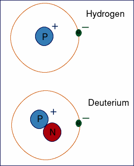

il y a 13,8 millard, une explosion, création du deutérium, isotope stable, du numéro atomique 1> un proton, un neutron. 
380 000 ans plus tard, c'est l'apparition du rayonnement fossile (l'univers observable) grâce aux photons. avant cela l'univers n'était qu'un amas flou